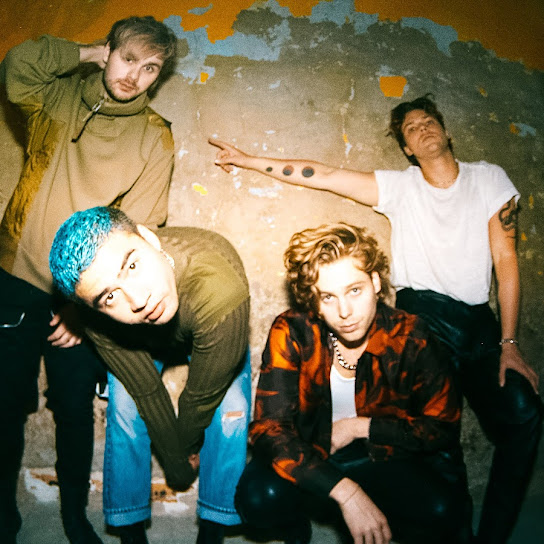

Boy bands have always been popular. From NSYNC to One Direction, there have been countless boy bands throughout the years. One of those bands is the Australian boy band 5 Seconds of Summer, or 5SOS. 5SOS burst onto the scene in 2014 with their popular single: “She Looks So Perfect.” The song played over the radio constantly, the catchy tune and lyrics cementing 5SOS’s teen heartthrob status.
5SOS released two albums, their 2014 self-titled debut, and 2015’s Sounds Good Feels Good, before taking a three-year hiatus. When they returned, it was for their third studio album: Youngblood, a complete deviation from their previous work. 5SOS had grown up, and their music had grown up with them. Their sound, looks and lyrics had all matured.
Why Don’t We, or WDW, another popular boy band, underwent a similar transformation. WDW formed in 2016 and released their first album in 2018, titled 8 Letters. 8 Letters was filled with fun and flirty numbers about love and growing up. WDW’s second album, The Good Times And The Bad Ones, was released in 2021, and was a complete reinvention of the band. The album was the first written and produced entirely on their own, reinventing both WDW’s sound and aesthetic, mirroring their transition from teenagers to adults.


5SOS and WDW have massive fan bases, mostly hordes of screaming teenagers with homemade signs made with fervor and glitter. These fans are loyal, and have followed the bands since the beginning. As 5SOS and WDW changed their sound to match their maturity, did this affect their sales and status?
LET'S TAKE A LOOK AT THE DATA:

This chart illustrates 5SOS's album sales from 2014-2022. The band's debut album, 5 Seconds of Summer, released in 2014, sold 734,000 copies in the United States. 2015's Sounds Good Feels Good sold 496,000 copies in the US. Youngblood, released in 2018, sold 700,000 copies in the US. Calm, released in 2020, sold 113,000 copies in the US. 5SOS5, released in 2022, sold 36,000 copies in the US. Fans seemed to like the change in sound for Youngblood, as this album sold nearly as many copies as 5SOS's debut album. However, there is a steady decline in sales for Calm and 5SOS5.

The above chart illustrates WDW’s album sales. 2018's 8 Letters sold 37,000 copies while 2021's The Good Times and the Bad Ones sold 38,000 copies. There isn't much of a difference, however The Good Times and the Bad Ones did sell an additional 1000 copies.
5SOS has had many songs chart on Billboard's Hot 100 List. Their highest charting song was "Youngblood," the title track of their third album Youngblood. The second highest charted song was "Amnesia," from their debut album. This shows their fans have remained loyal, even as the band underwent a transformation.

Why Don't We has only ever had one song chart on the Billboard Hot 100 list, and that was "Fallin'," from their second album The Good Times and the Bad Ones. None of the songs from 8 Letters charted on the Billboard Hot 100.

All five of 5SOS’s full-length studio albums have hit No. 1 on Billboard’s Top Album Sales, however only four are pictured in the image below. The Good Times and the Bad Ones made No. 1, while 8 Letters hit No. 3 on the list.


What do we make of all this? Both 5SOS and WDW managed to survive the unthinkable: growing up in the public eye. Their music developed, and they matured as individuals, and as artists. Seemingly—their popularity grew with them.